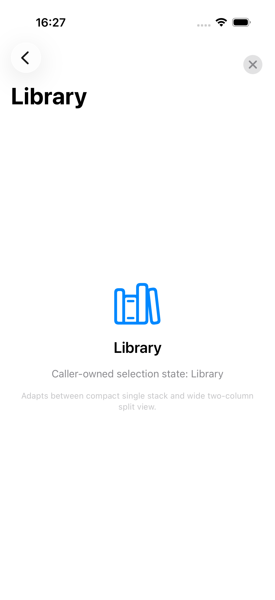
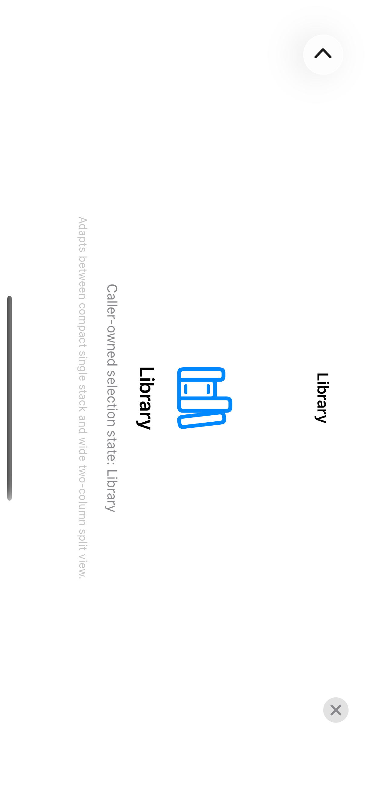
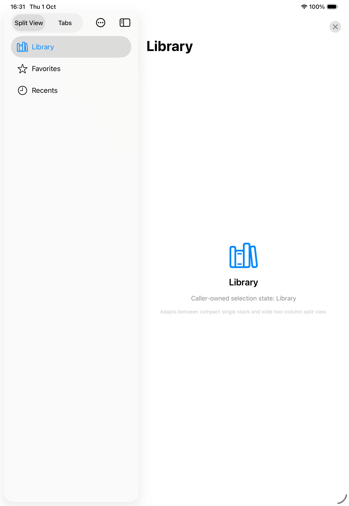

Apple Design OS
A SwiftUI design-system library that keeps controls native while adding semantic roles, typed profiles, and platform-adaptive recipes. Built on iOS 17+, iPadOS 17+, and macOS 14+ floors with zero third-party package dependencies.
Native SwiftUI primitives with semantic governance
Standard SwiftUI gives teams expressive building blocks, but large projects frequently encounter inconsistent content metrics, untyped styling overrides, and brittle navigation scaffolding across form factors. Apple Design OS introduces typed profiles and semantic roles without abstracting away native platform behaviors.
| Key Specification | Contract & Scope |
|---|---|
| Repository | jangtrinh/design-os-apple |
| Requires | iOS 17+, iPadOS 17+, macOS 14+ · Swift 6.2 · Zero external package dependencies |
| Interface | Native SwiftUI Library (Swift Package Manager) |
| Transport / Protocol | In-process Swift Package · DocC Documentation |
| Telemetry / Privacy | Zero first-party telemetry or tracking in library; page loads external Shields badges and Buy Me a Coffee widget |
| License | MIT License |
| Boundary | Guidance |
|---|---|
| Use When | Building native SwiftUI apps for iOS 17+, iPadOS 17+, and macOS 14+ that need semantic roles, typed profiles, and adaptive recipes without third-party dependencies. |
| Avoid When | Requiring cross-platform abstractions (Flutter/React Native), custom non-native rendering engines, or legacy deployments below iOS 17 / macOS 14. |
| Safe-Use Step | Action |
|---|---|
| 1. Add Package | Link DesignOSApple via Swift Package Manager with zero external dependencies. |
| 2. Compose Natively | Place DesignOSListRow inside native List or NavigationSplitView. |
| 3. Inject Profile | Apply .designOSProfile(.default) once at a product subtree boundary. |
| Practical Verb | Command & Verified Scope |
|---|---|
| build | swift build — Compiles package in debug mode. |
| test | swift test — Runs package unit tests (historically recorded 90 passed in baseline; 91 passed in debug configuration). |
| inspect | xcodegen generate --spec Examples/DesignOSAppleGallery/project.yml --project Examples/DesignOSAppleGallery followed by open Examples/DesignOSAppleGallery/DesignOSAppleGallery.xcodeproj (see Browse the Gallery in README) — Generates Xcode project (separate open command launches catalog). |
| verify | scripts/verify-release-candidate.sh — Validates candidate release gate (historical baseline failed Swift 6.2.3 SIL crash; workaround avoids crash with strict release build passed). |
Release compilation verification: Initial baseline compilation under Swift 6.2.3 release mode (-O) encountered a CopyPropagation SIL compiler crash. A minimal source-preserving memberwise initialization workaround in descriptor decoding avoids the observed crash (compiler-internal mechanism unproven); unchanged strict release build passed cleanly, 91 unit tests passed in debug configuration, and targeted decoder regression passed release optimization.
Historical test evidence: Base candidate verification at audit commit 2bcb5bb233380ba84336425ba484f57e56f3dc91 recorded 90 package tests, 10 phone UI tests, 1 iPad UI test, and 15 verifiers across 417 files. Original Task 1470 result bundle is unavailable due to rolling retention; two geometry timeouts (89 and 103) were retained in logs. Subsequent typed diagnostics suggest a harness observation mismatch, while the internal observation mechanism remains uninstrumented.
Support Matrix (Dated 2026-10-01)
Apple Design OS maintains explicit distinctions between declared package floors, executed runtime simulator environments, and platform announcement intake.
| Domain | Environment / Target | Execution Status | Verification Evidence & Sources |
|---|---|---|---|
| Package Floor | iOS 17.0+ · iPadOS 17.0+ · macOS 14.0+ | Implemented | Declared in Package.swift; strict floor checks enforced |
| Toolchain | Swift 6.2 · Swift Package Manager | Verified (Debug & Release) | Debug passes (91 tests); strict release build passes avoiding baseline CopyPropagation crash |
| Executed Runtime | iPhone 17 Pro · iOS 26.2 (build 23C54) | Tested | Executed simulator tests; portrait and landscape captures |
| Executed Runtime | iPad Pro 11-inch (M5) · iPadOS 26.2 (build 23C54) | Tested | Executed simulator tests; two-column split view capture |
| Navigation Architecture | Native NavigationSplitView with caller-owned selection | Implemented & Tested | Native selection binding; tab state and modal preview verified |
| OS 27 & iPhone Duo | iOS 27, iPadOS 27, macOS 27, iPhone Duo | Documented Intake Only | 10 primary Apple sources (2026-10-01), 4 UKMC units; local SDK unavailable |
| Hardware Intake | iPhone Duo (announced Sep 9, 2026; availability Oct 23, 2026) | Documented Only | Apple Newsroom (2026-09-09); announced, not shipping as of Oct 1; no guessed APIs or points |
Add the Package
Integrate DesignOSApple into your project using Swift Package Manager. The package requires zero third-party dependencies.
// Package.swift
dependencies: [
.package(url: "https://github.com/jangtrinh/design-os-apple.git", branch: "main")
],
targets: [
.target(name: "MyApp", dependencies: [
.product(name: "DesignOSApple", package: "design-os-apple")
])
]First Compiling View
The first compiling view composes DesignOSListRow inside a native SwiftUI List and injects the default design-system profile at the view hierarchy root. This exact code block is verified against the built package by scripts/verify-consumer-quickstart.sh:
import DesignOSApple
import SwiftUI
struct AccountList: View {
var body: some View {
List {
DesignOSListRow {
Label("Profile", systemImage: "person.crop.circle")
} title: {
Text("Account")
} subtitle: {
Text("Manage identity and sign-in")
} trailing: {
Image(systemName: "chevron.forward")
.foregroundStyle(.secondary)
}
}
.designOSProfile(.default)
}
}Native Implementation Specimens
The following uncropped screenshots demonstrate native SwiftUI navigation behavior on Apple platform simulators. Click any specimen to inspect the uncropped image asset.

iPhone 17 Pro · Portrait Compact Navigation
specimen-iphone17pro-compact.png · 1206×2622 · iOS 26.2 (Simulator build 23C54) · SHA-256: 9d61d18d…
iPhone 17 Pro · Rotated Landscape Canvas
specimen-iphone17pro-landscape.png · 2622×1206 (Orientation 8, 90° CCW) · iOS 26.2 (Simulator build 23C54) · SHA-256: a158da77…
iPad Pro 11-inch (M5) · Two-Column Persistent Split View
specimen-ipadpro-wide.png · 1668×2420 (EXIF Orientation 1) · iPadOS 26.2 (Simulator build 23C54) · SHA-256: 2ed549e7…Attribution & Proprietary Rights: These specimens are repository-generated implementation screenshots demonstrating native SwiftUI navigation behavior on Apple platform simulators. Apple platform visual styles, UI components, and SF Symbols remain the proprietary property of Apple Inc. and are depicted here for technical reference and interoperability demonstration only. They are not subject to blanket MIT code licensing.
Frequently Asked Questions
What is Apple Design OS?
Apple Design OS is a native SwiftUI design-system library for iOS, iPadOS, and macOS. It keeps controls native while adding semantic roles, typed profiles, content components, and platform-adaptive recipes.
What platforms and Swift versions are supported?
Apple Design OS requires minimum platform versions of iOS 17, iPadOS 17, and macOS 14. It compiles with the Swift 6.2 toolchain using standard Swift Package Manager with zero third-party dependencies.
Does Apple Design OS support iOS 27 and iPhone Duo?
The September 2026 Apple announcements (iOS 27, iPadOS 27, macOS 27, and iPhone Duo) are documented in the repository intake report using 10 primary Apple sources and 4 UKMC units. Native runtime execution was verified on iOS 26.2 and iPadOS 26.2 simulators (build 23C54); local OS 27 and iPhone Duo SDKs or simulator runtimes remain unavailable locally (local SDK and runtime absence only is verified).
How does Apple Design OS differ from third-party UI kits?
Apple Design OS directly uses native SwiftUI primitives, preserves platform-specific interaction models, and separates semantic design intent from runtime code without introducing external runtime dependencies.
Does Apple Design OS collect telemetry or track usage?
No first-party telemetry, tracking, or network phone-home mechanisms exist in the library or documentation. The third-party Buy Me a Coffee widget script loads externally from cdnjs.buymeacoffee.com.
Under what license is Apple Design OS distributed?
Original library code and documentation are released under the permissive MIT License. Apple platform visual styles, UI components, and SF Symbols remain the proprietary property of Apple Inc.
Documentation & Ecosystem
Explore deep-dive technical reports and companion repositories in the DESIGN:OS ecosystem.